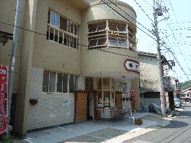
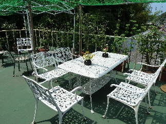
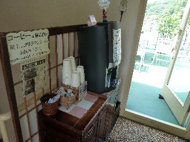

薬師湯のお湯でリフレッシュできました。
2013/07/21
温泉津温泉って初めてです。
世界遺産とかで有名になっちゃって、人が沢山いたらどうしよう？なんて心配して行ったんですが、そんな心配は今日は必要なかったです。
空いてて快適でした。（たまたまかな？）

入口で、温泉の入浴方法を丁寧に教えていただけました。初心者にはありがたいサービスですね。
ここの温泉は効能が高いので、一気にお湯に浸からないで、少しづつならしながら浸かった方がいいそうです。
湯気に触れてるだけでも効果があすそうです。
温泉の感想ですが、確かに説明にあったように濃い感じがしました。
鉄っぽいのや塩っぽいのがよく分かりました。
体が温まって、汗がよく出ました。
夏場なので、温泉上がった後に汗かいたら嫌だなーなんて思ったんですが、湯上りはさっぱりして気持ちよかったです。
さっぱりしたせいが、疲れが取れたーって気がして、体が軽くなりました。

温泉上がったあとは、休憩がてら建物内を歩いて回りました。
屋上です。夏の日差しが強くて暑かったです。

屋上にあったセルフサービスのコーヒーです。
暑いのにホットコーヒーは無理でしょうって思ったんですが、意外と美味しくいただけました。
遠いのでなかなか行けないですが、またリラックスしに行けたらいいなーって思いました。